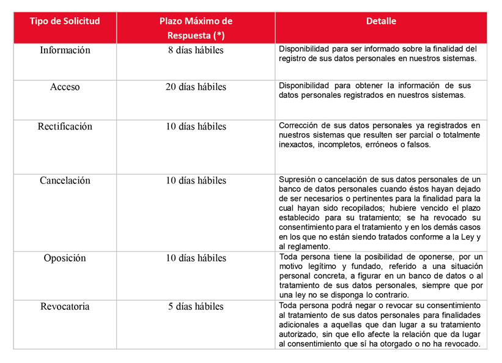

Porque nuestro compromiso en proteger sus datos personales es importante, le indicamos los pasos que deberá seguir para ejercer sus derechos PDP (Información, Acceso, Rectificación, Cancelación, Oposición y Revocatoria):
1. Descargue el formulario (Dé click aquí) y complete todos los datos solicitados.
2. Firme el documento, escanéelo y envíelo a la cuenta de correo: derechosarco@uns.edu.pe
Importante: Debe adjuntar copia
simple de DNI / Carné de Extranjería o Pasaporte.
3. En caso desee entregar los documentos de manera presencial, podrá realizarlo en la siguiente dirección: - Av. Pacífico 508 - Nuevo Chimbote-Edificio de Rectorado de la UNS (Dirección de Asesoría Legal)
4. La respuesta a su solicitud se realizará dentro del plazo establecido por Ley.
A continuación el detalle de cada tipo de solicitud:
(*) Plazo establecido por Ley. Los días son contados desde el día siguiente a la presentación de la solicitud vía correo o de forma presencial.
Descargar aquí Acuerdo de privacidad de Protección de Datos Personales